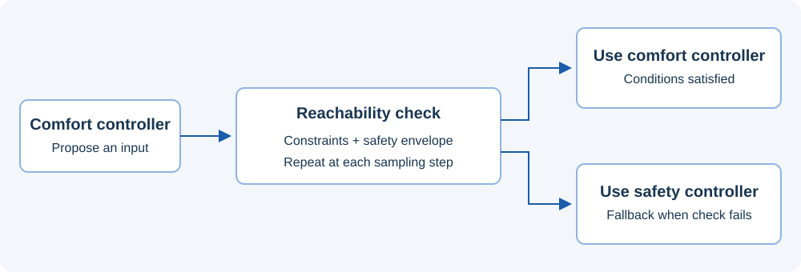

METHOD · RECORDED ANIMATION
Safety Net Control
Check a comfort controller using reachability analysis at each sampling step. Apply it when constraints and the safety-envelope condition are satisfied; otherwise switch to the precomputed safety controller. Safety depends on the specified dynamics, uncertainty bounds, and verification conditions.


Example
View MATLAB example code
Reproduction files
Static result and vector figure
Execution record and original test outcomes · Example source · Plot data (.mat)